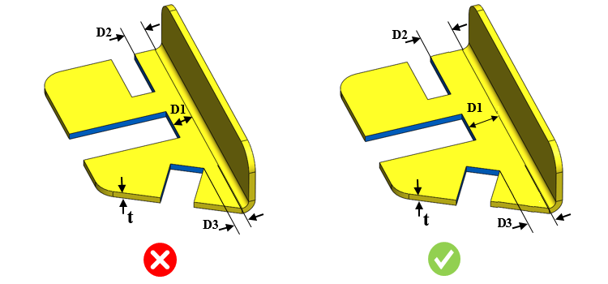

ノッチと曲げの最小距離を板厚で割った比は、ユーザーが指定した値以上である必要があります。
ノッチ加工とは、金属ストリップまたは部品の外縁から一部をせん断によって除去する加工です。
ノッチから曲げまでの距離が最小値に近い場合、板金に歪みが生じる可能性があります。このような状態を避けるため、板厚に応じてノッチは曲げから適切な距離を保って配置する必要があります。
一般的な設計ガイドラインでは、以下が推奨されています。
直交するノッチの場合、ノッチと曲げの最小距離（D1）を板厚で割った比は 4 以上とします。
平行なノッチの場合、ノッチと曲げの最小距離（D2）を板厚で割った比は 10 以上とします。
その他のノッチの場合、ノッチと曲げの最小距離（D3）を板厚で割った比は 10 以上とします。
ルール UI では、材料の一覧が Map Material から読み込まれ、ユーザーは材料およびその値を設定できます。
材料とその値を設定した後、Ctrl+M コマンドを使用して、ルール UI 上で Material Group およびグレード付きの設定済み材料一覧をフィルタリングして表示できます。同じキー（Ctrl+M）でフィルターを解除できます。

ここでは、
t = 板厚
D1 = 直交方向の距離
D2 = 平行方向の距離
D3 = 傾斜方向の距離